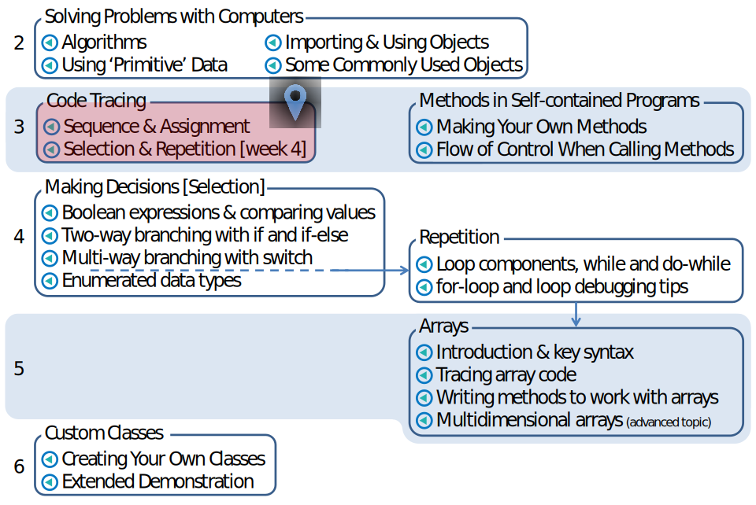

Overview
An introduction to reading and 'running' code in your head, assisted by pen and paper to serve as a model of the computer's memory. The first video introduces the skill for tracing simpler programs involving variables and sequential instructions, while the second shows you how to build on those skills when program code includes selection or repetition.
Total length: 21 minutes
Aim to watch before: Week 3 tutorials and lecture for Code Tracing: Sequence and Assignment, and Week 4 lecture for Code Tracing: Selection and Repetition
Downloadable resources
Mini-lecture Map showing these videos in context
Mini-lecture Map
